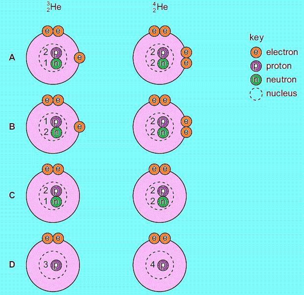
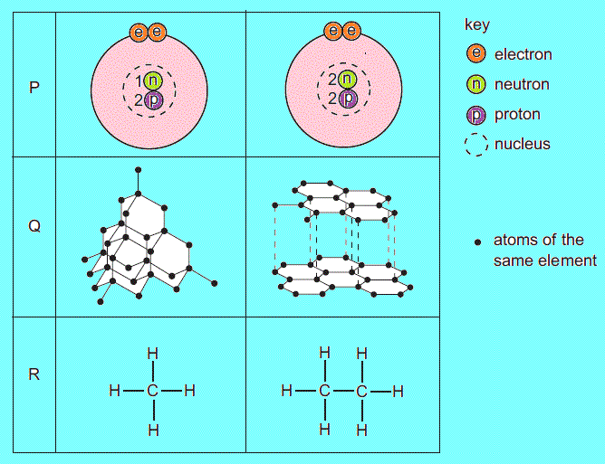
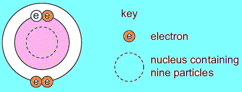
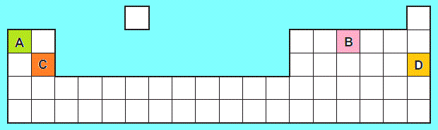
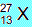
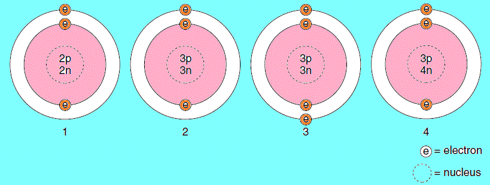
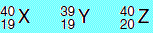
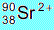

webmaster
| particle | charge | relative mass |
|---|---|---|
| electron | A | B |
| neutron | C | 1 |
| proton | D | 1 |
Which two diagrams show the arrangement of particles in these two isotopes?
 4.Which row gives the outer electronic shell of fluorine and of neon?| 9F | 10Ne | |
|---|---|---|
| A | 7 | 8 |
| B | 7 | 10 |
| C | 9 | 8 |
| D | 9 | 10 |
What could this ion be?
| S2- | Ca2+ | |
|---|---|---|
| A | yes | yes |
| B | yes | no |
| C | no | yes |
| D | no | no |
Which pair or pairs are isotopes?
 7.Which numbers are added to give the nucleon number (mass number) of an ion? 8.Which change to an atom occurs when it forms a positive ion? 9.An atom has the symbol .Which value determines the position of the element in the Periodic Table?
10.Element Y is in the second Period of the Periodic Table. An atom of element Z has six more protons than an atom of element Y.Which statement must be correct?
11.The nucleon number and proton number of the lithium atom are shown by the symbol 73Li .What is the correct symbol for the lithium ion?
12.The table shows the numbers of particles present in the nuclei of four atoms or ions.Which two particles belong to the same element?
| protons | neutrons | electron structure | |
|---|---|---|---|
| 1 | 18 | 22 | 2,8,8 |
| 2 | 19 | 20 | 2,8,8 |
| 3 | 19 | 21 | 2,8,8,1 |
| 4 | 20 | 20 | 2,8,8,2 |
| particle gained | change | |
|---|---|---|
| A | electron | an isotope of element X is formed |
| B | electron | the element one place to the right of X in the Periodic Table is formed |
| C | proton | an isotope of element X is formed |
| D | proton | the element one place to the right of X in the Periodic Table is formed |
What is the proton number and neutron number of the atom?
| proton number | neutron number | |
|---|---|---|
| A | 4 | 5 |
| B | 4 | 9 |
| C | 5 | 4 |
| D | 5 | 9 |
Which statement about these atoms is correct?
16.The diagram shows part of the Periodic Table.Which element is correctly matched with its electronic structure?
| electronic structure | |
|---|---|
| A | 2,8,1 |
| B | 2,4 |
| C | 2,8,2 |
| D | 2,8 |
Which statement about these atoms is correct?
18.Element X is represented by Which statement about element X is correct?
19.The table shows the electronic structures of four elements.Which element is a noble gas?
| number of electrons | ||
|---|---|---|
| shell 1 | shell 2 | |
| A | 1 | 0 |
| B | 2 | 0 |
| C | 2 | 2 |
| D | 2 | 6 |
Which two diagrams show atoms that are isotopes of each other?
 21.How are the electrons arranged in a neon atom, Ne, and a sodium ion, Na+? 22.The table describes the structures of four particles.| particle | number of protons | number of neutrons | number of electrons |
|---|---|---|---|
| O | 8 | 8 | 8 |
| O2- | 8 | 8 | X |
| Na | 11 | Y | 11 |
| Na+ | 11 | 12 | Z |
What are the correct values of X, Y and Z?
23.Which statements comparing the properties of electrons, neutrons and protons are correct?| neutrons and protons are both heavier than electrons | only electrons and neutrons are charged | |
|---|---|---|
| A | yes | yes |
| B | yes | no |
| C | no | yes |
| D | no | no |
| 199F | 2010Ne | |
|---|---|---|
| A | 7 | 8 |
| B | 7 | 10 |
| C | 9 | 8 |
| D | 9 | 10 |
To which group in the Periodic Table does it belong?
26.The table shows the structure of different atoms and ions.| particle | proton number | nucleon number | number of protons | number of neutrons | number of electrons |
|---|---|---|---|---|---|
| Mg | 12 | 24 | 12 | W | 12 |
| Mg2+ | X | 24 | 12 | 12 | 10 |
| F | 9 | 19 | 9 | Y | 9 |
| F- | 9 | 19 | 9 | 10 | Z |
What are the values of W,X, Y and Z?
27.The letters X, Y and Z represent different atoms:What can be deduced from the proton numbers and nucleon numbers of X, Y and Z?
28.Which statement about all the noble gases is correct? 29.Hydrogen can form both H+ ions and H- ions.Which statement about these two ions is correct?
30.Which graph shows the number of electrons in the outer shell of an atom, plotted against the proton (atomic) number for the first ten elements in the Periodic Table? 31.What is the structure of the ion ?| protons | neutrons | electrons | |
|---|---|---|---|
| A | 38 | 52 | 36 |
| B | 38 | 52 | 38 |
| C | 38 | 90 | 36 |
| D | 38 | 52 | 36 |
What is the proton (atomic) number of X?
34.An atom of element X is represented by 73X.Which statement about an atom of X is correct?
35.The table shows information about particles X and Y.| Particles | Number of protons | Number of neutrons | Electronic structure |
|---|---|---|---|
| X | 9 | 10 | 2,8 |
| Y | 17 | 20 | 2,8,8 |
Which statement is correct for both X and Y?
36.In which set do the three particles each have the same total number of electrons? 37.The table shows information about ions Q and R.| ion | protons | neutrons | electrons |
|---|---|---|---|
| Q | 16 | 18 | 18 |
| R | 17 | 18 | 18 |
What are Q and R?
38.The formulae of some ions are shown here: N3-, O2-, F-, Li+, Mg2+.They all have
39.An ion X+ contains 23 particles in the nucleus and 10 electrons outside the nucleus.What does the nucleus of the ion X+ contain?
| protons | neutrons | |
|---|---|---|
| A | 9 | 14 |
| B | 10 | 13 |
| C | 11 | 12 |
| D | 12 | 11 |